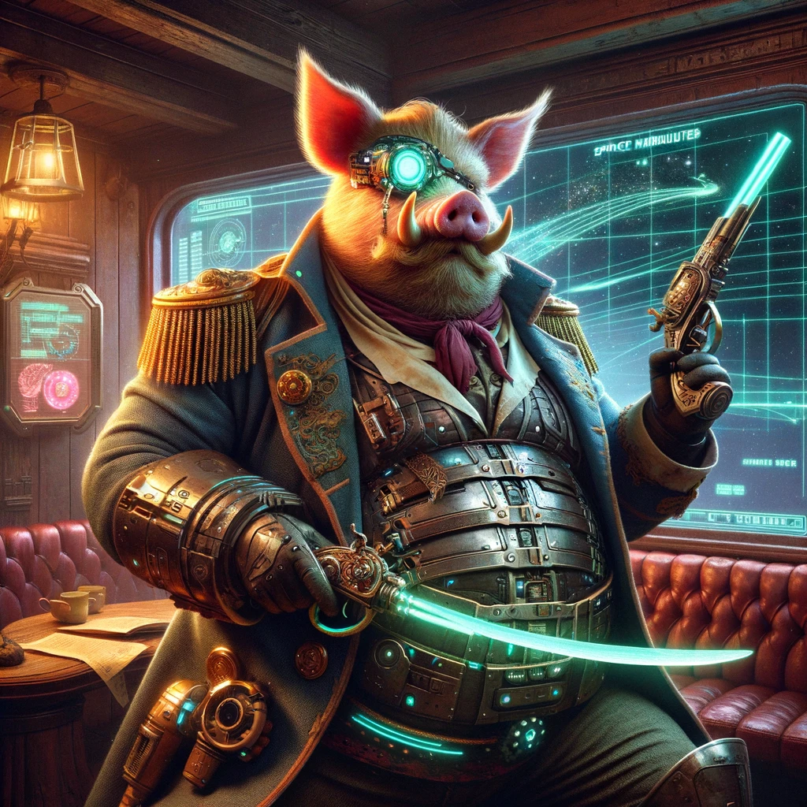
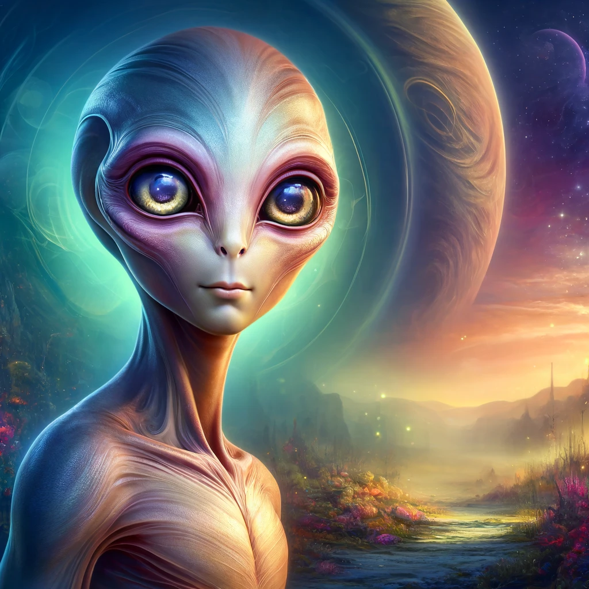
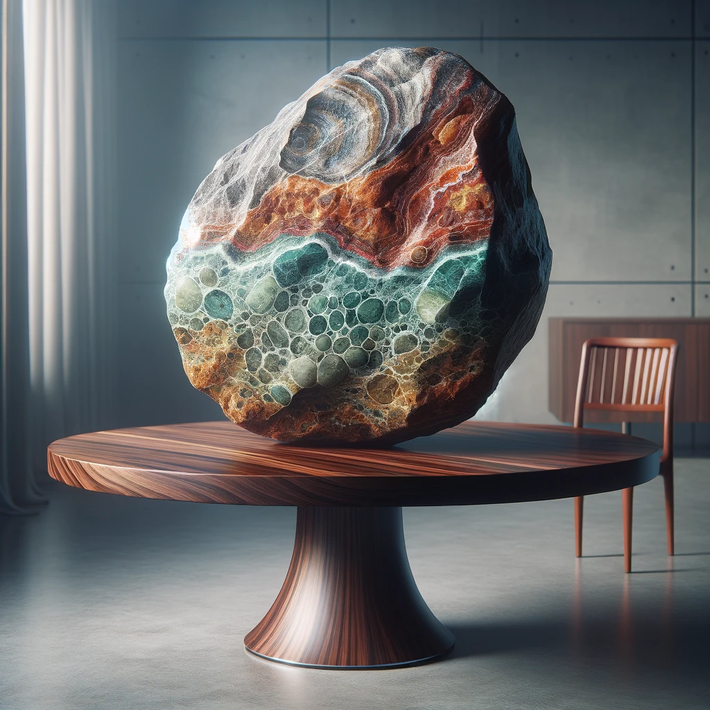
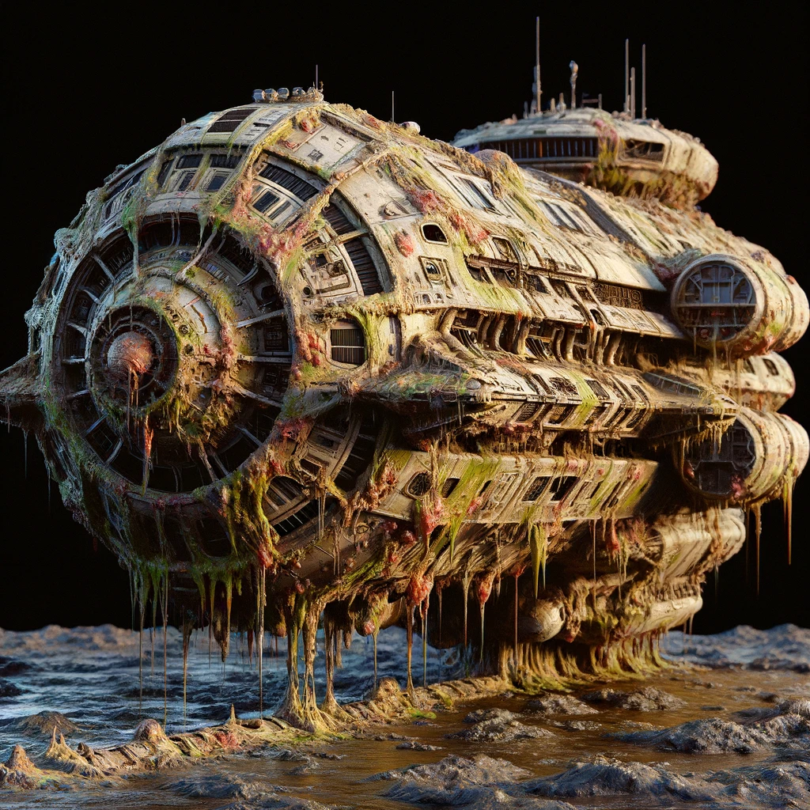
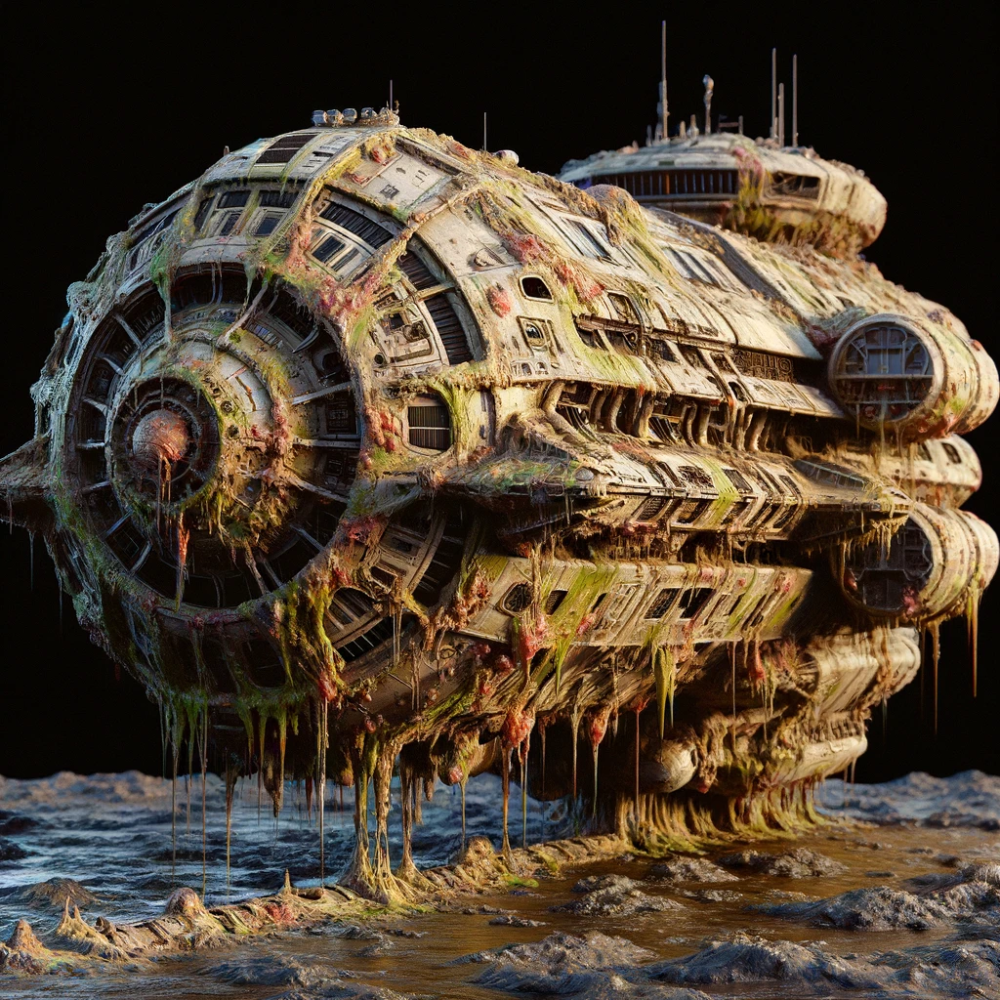
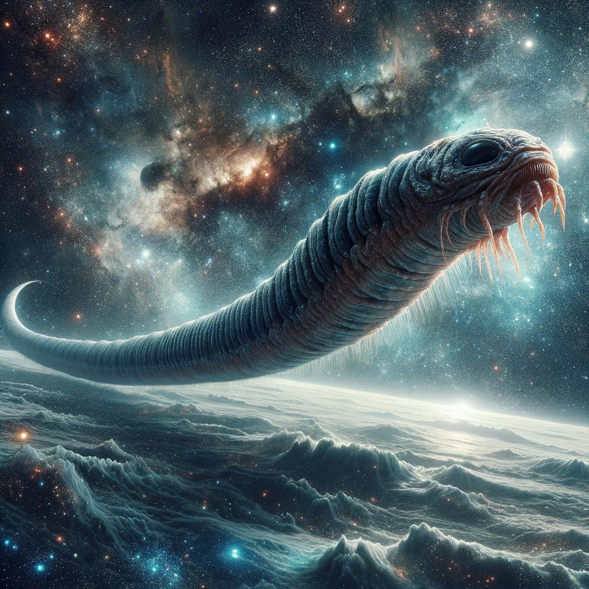
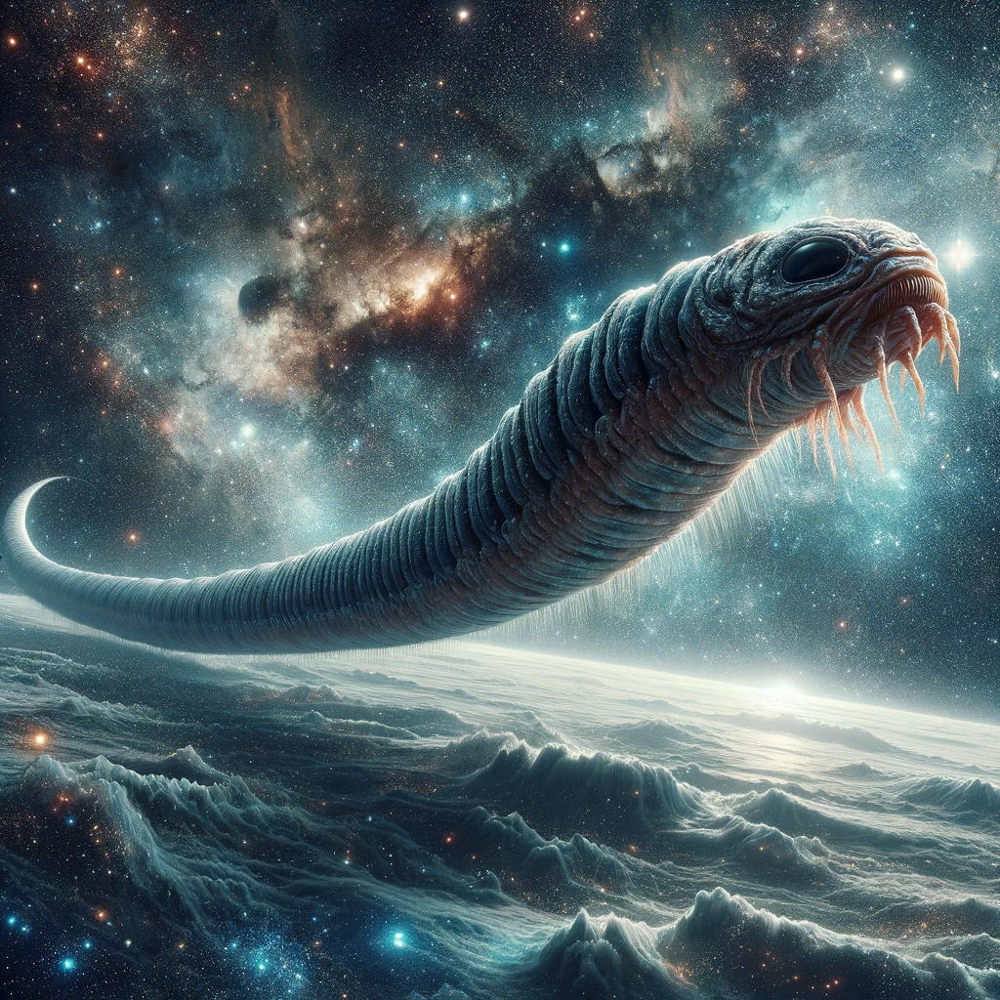

Join one of our trusted cosmic nomads on a personal trip as they sparodically shuffle around the galaxy:




- Rupert the swinebelly. Previously a full-time marauder, Rupert has left his past behind to pursue a career as a travel guide.
- Xex-k7. Being only 7000 years old means Xex-k7 still has a passion for exploration. He is currently on a gap-century working with our travel team.
- Rock. What you see is what you get.
- Roger Moore. Frequently tours the nebula region, enjoys long walks in the park on days off.
- Hector. Currently dead and awaiting reincarnation, will not be available until next week.
Take to the stars with one of our cruise liners where you can meet other morons with a similar appetite for interdimensional travel:
 

- The Big-Berther 700. With a 24/7 meat buffet, this space cruiser holds 500 human passengers or 27,000 live Lindt Chocolate bunnies depending on which is your preferred measurement.
- Chimney Pot. Whilst the ship's name may be unflattering, I can assure you this is the height of luxerious travelling. No photo available (It's not 'ugly' in the convential sense, would prefer if you didn't judge a book by it's cover).
- Cesspit. No dancing around this one, she's a rough cruiser and uninhabitable if you stay on for too long, excellent price however.
If the above don't float your boat, we do have the c-suite travel packages attached below:
While costing a pretty penny, these methods of travel are exceptional and at the height of stupidity should you be willing to fork out a small fortune.

 

- Pedalo. Unconventionally attractive and our most popular form of luxery travel, the pedalo comes fitted with a highly amusing fibreglass swan bodykit and peddles so you may travel at the speed you desire.
- Pig. Pig riding has never been so avant-garde, with a potbelly pig between your thighs you can't help but smile as you pull its curly tail and listen to it oink and squeal. Excellent source of protein should you get lost additionally.
- Wormhole. Chase the stars on a galactic Shai-Hulud, life insurance and a spare pair of underpants recommended.